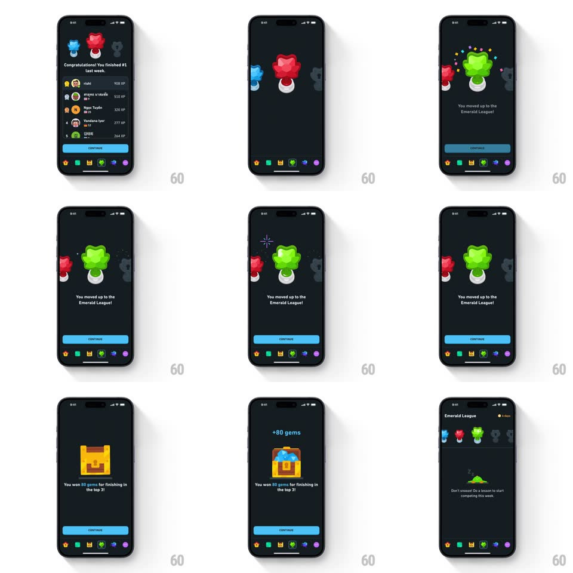

Media
Frame-by-frame

Rebuild this animation 1:1: Duolingo's league promotion sequence - leaderboard results, a springy Emerald badge reveal with sparkles, a gem-chest reward, and arrival in the new league.

Rebuild this animation 1:1: Duolingo's league promotion sequence - leaderboard results, a springy Emerald badge reveal with sparkles, a gem-chest reward, and arrival in the new league.
## Integration
Integration: stack-agnostic spec - springs given as stiffness/damping, timed motions as duration + curve; map every value to your framework and animation library of choice.
## Scene
A dark sequence over Duolingo's tab bar: (1) the leaderboard result ("Congratulations! You finished #1 last week", ranked rows with XP), (2) the badge reveal ("You moved up to the Emerald League!"), (3) the reward ("+80 gems", treasure chest, "You won 80 gems for finishing in the top 3!"), (4) the Emerald League home with the league badge row and "Don't snooze! Do a lesson to start competing this week." Each step has a blue CONTINUE button.
## Motion spec
Pattern: multi-step promotion reveal, ~600ms per beat.
- Leaderboard: rows stagger up (translateY 16px -> 0 + fade, 250ms, 60ms apart) with the #1 row's badge popping last (spring ~400/16).
- Badge reveal: the old league badge slides off left while the Emerald badge springs in center (scale 0 -> 1.15 -> 1, spring ~380/15, 500ms) on its pedestal; sparkle bursts (6-8 star particles, 500ms, staggered 60ms) fire around it and a soft glow pulses behind; "You moved up to the Emerald League!" fades up 200ms after the badge lands.
- Reward: the chest drops in with a bounce (translateY -40 -> 0, spring ~300/14), lid pops open (rotate -30deg with spring) releasing "+80 gems" which counts up (0 -> 80, 600ms) as gem particles fly toward the top bar.
- Arrival: the new league screen slides up (300ms) with the badge row staggering in and the Emerald badge highlighted.
## Calibration
- One beat per screen, gated by CONTINUE - no auto-advance.
- The badge spring has visible overshoot; particles are decorative, short-lived.
## Reduced motion
Simple crossfades between steps (250ms); no springs or particles.
## Don't miss
- The badge lands before its label - object first, words second.
- The gem count-up syncs with the chest opening, not after it.